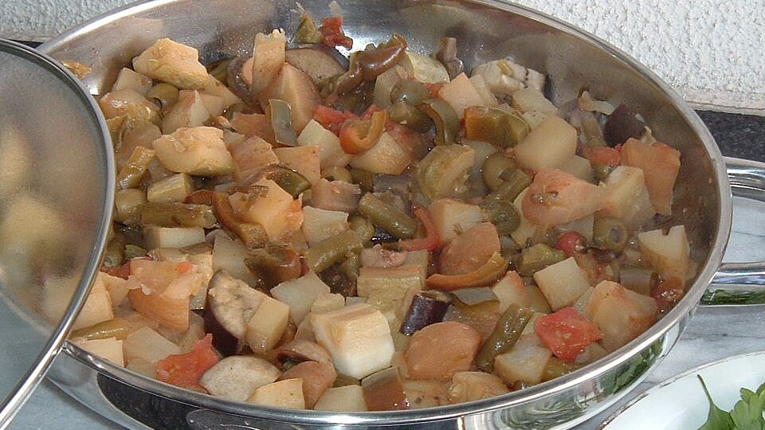

Mediterranean Vegetable Stew
Homepage

A delightful experience that will take you to the European seasides in mere seconds!
Ingredients:
- 2 tablespoons olive oil, divided
- 1 cup chopped red onion
- 2 cups coarsely chopped green pepper
- 2 large garlic cloves, crushed
- 1 cup sliced mushrooms
- 1 small eggplant, unpeeled, cut in 1- to 2-inch chunks
- 1 (28 ounce) can crushed tomatoes
- ½ cup kalamata olives, pitted and sliced
- 1 (15 ounce) can chickpeas, drained and rinsed
- 1 tablespoon chopped fresh rosemary
- 1 cup coarsely chopped parsley
Instructions:
-
In a large skillet, heat 1 Tb. oil. Saute onion and pepper until soft, about 10 minutes.
-
Add 1 Tb. oil, garlic, mushrooms and eggplant. Simmer, stirring occasionally, until eggplant is softened but not mushy,
about 15 minutes.
-
Add tomatoes, olives, chickpeas and rosemary. Simmer until heated through, about 10 minutes.
-
Stir in parsley. Sprinkle feta cheese over stew if desired and serve hot or cold!
Nutritional facts:
| Calories: |
222 |
| Protein: |
6.7g |
| Carbohydrates: |
33.4g |
| Fat: |
8.8g |
| Sodium: |
504.9mg |